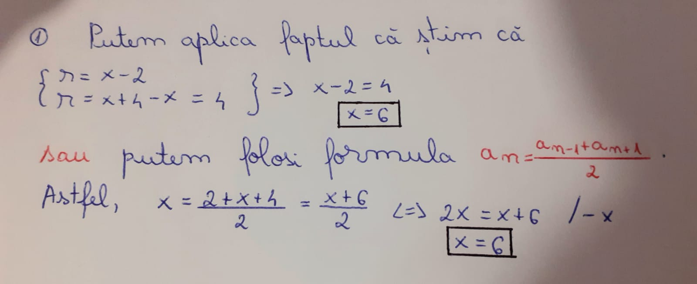
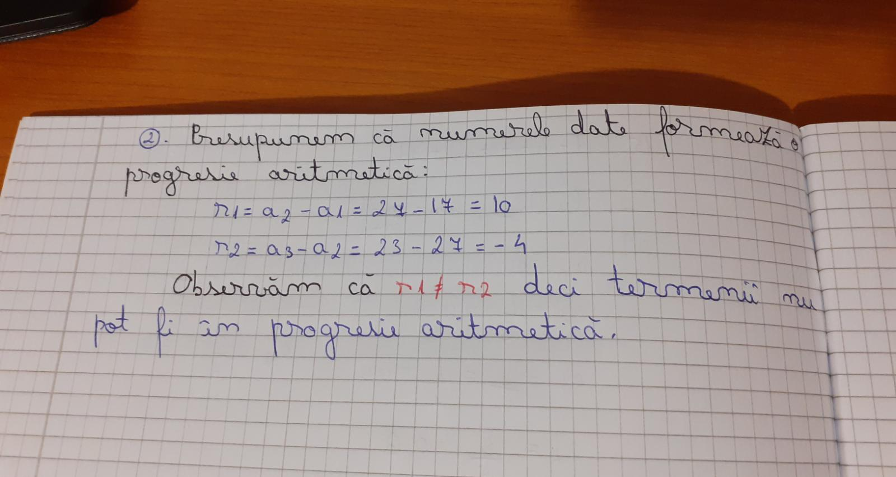
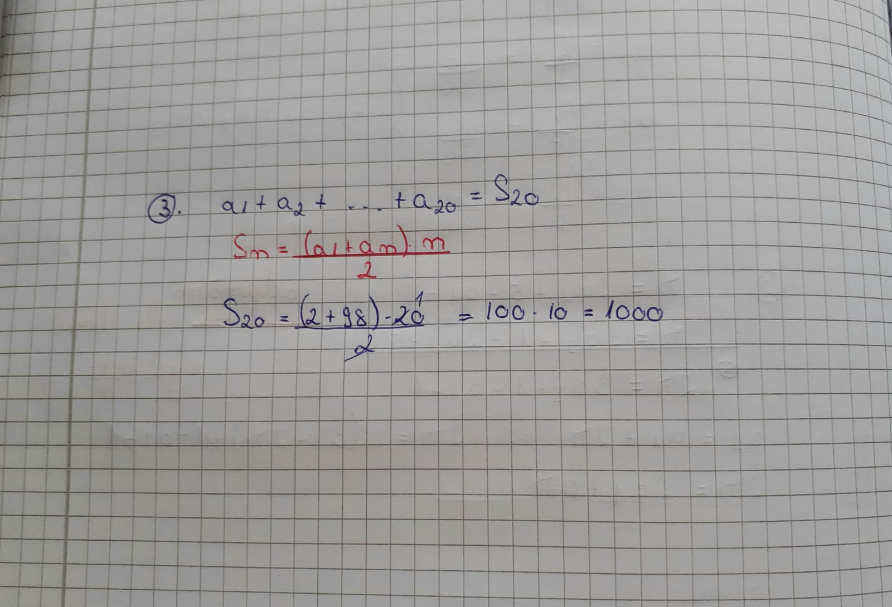
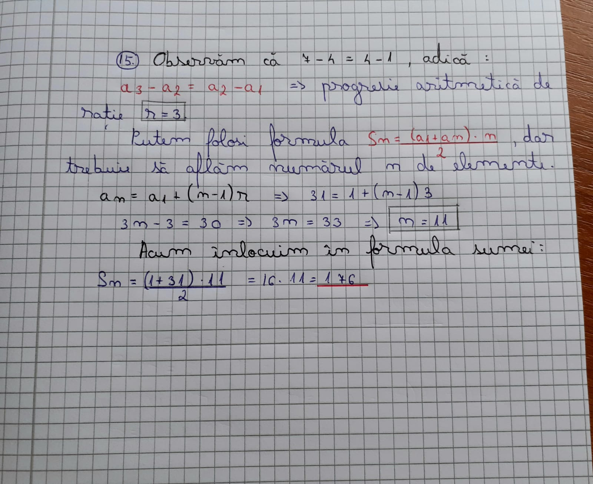
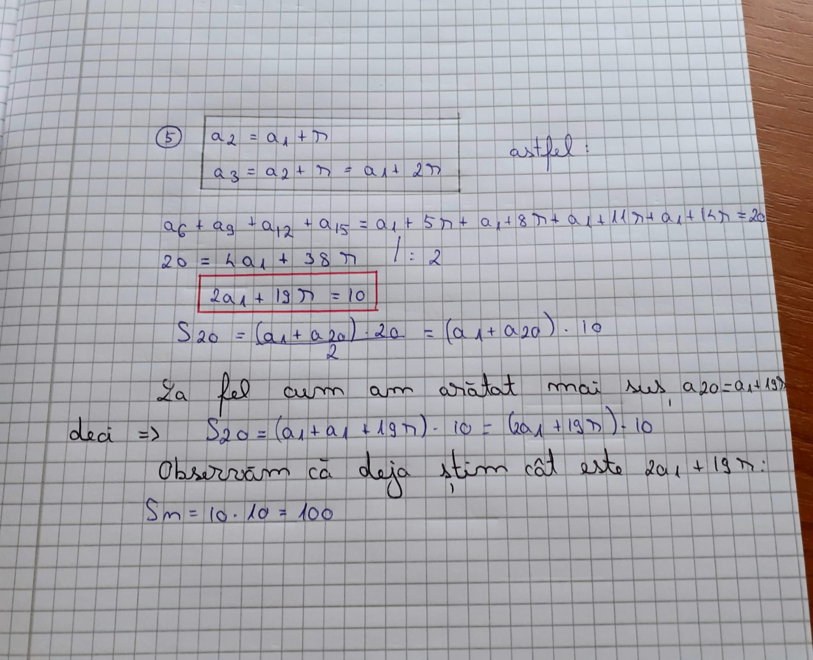

Definiție:
Un şir de numere în care fiecare termen, începând cu al doilea, se obţine din termenul precedent prin adăugarea unui număr r, numit rație, se numeşte progresie aritmetică.
Un șir de numere (an)n≥1 este progresie aritmetică de rație r dacă și numai dacă diferența oricăror termeni consecutivi este constantă.
Observație:
O progresie aritmetică (an)n≥1 este determinată de primul termen și de rația r.
Notații:
- a1 - primul termen
- r - raţia
- an - termenul general
Termenul general al unei progresii aritmetice:
Este dat de formula: an = a1 + (n - 1)r , n≥1.

.jpeg)
Teoremă:
an = (an-1 + an+1)/2, pentru orice n>=2
Teoremă:
ak + an-k+1 = a1 + an, pentru orice n, k>=1, k<=n
Teoremă:
Fie (an)n≥1 o progresie aritmetică de rație r și Sn = a1 + a2 + ... + an. Atunci: Sn = n(2a1 + (n - 1)r) / 2, pentru oricare n>=1
Exerciții rezolvate:
1. Determinați numărul real x, știind că numerele 2, x, x+4 sunt în progresie aritmetică.
2. Arătați că numerele 17, 27, 23 nu pot fi termeni consecutivi ai unei progresii aritmetice.
3. Se consideră o progresie aritmetică cu a1 = 2 și a20 = 98. Calculați a1 + a2 + … + a20.
4. Calculați suma 1 + 4 + 7 + ... +31.
5. Găsiți suma primilor 20 de termeni ai progresiei aritmetice (an)n>=1, dacă a6 + a9 + a12 + a15 = 20.
